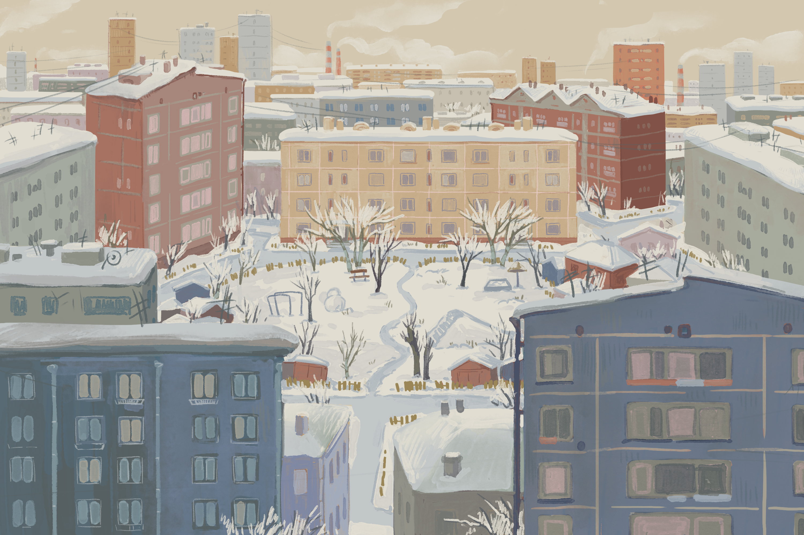
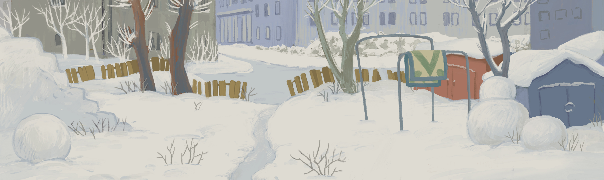
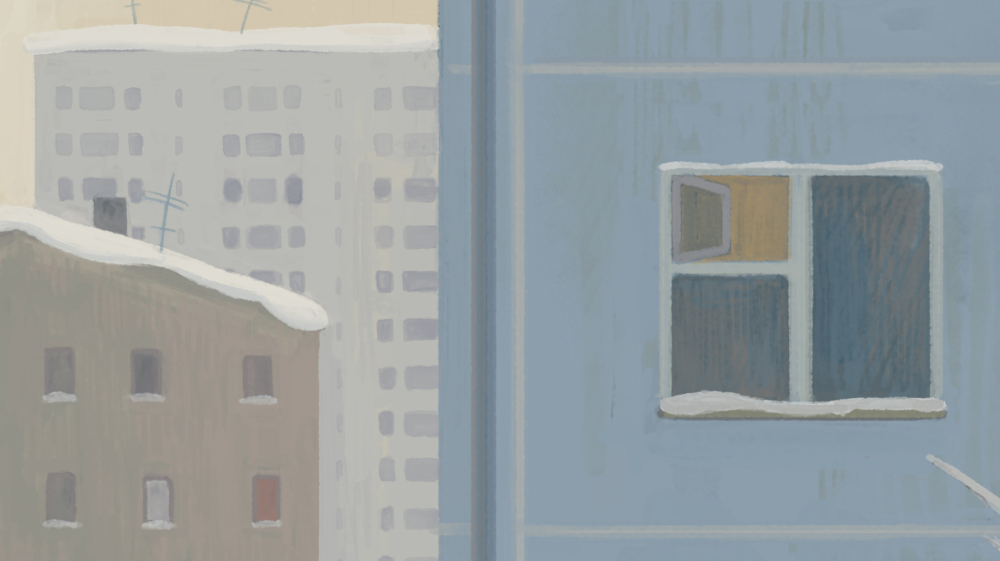
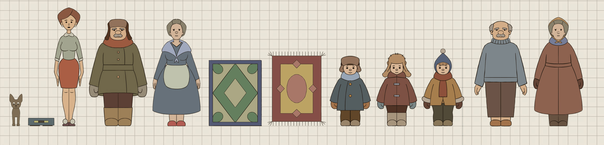
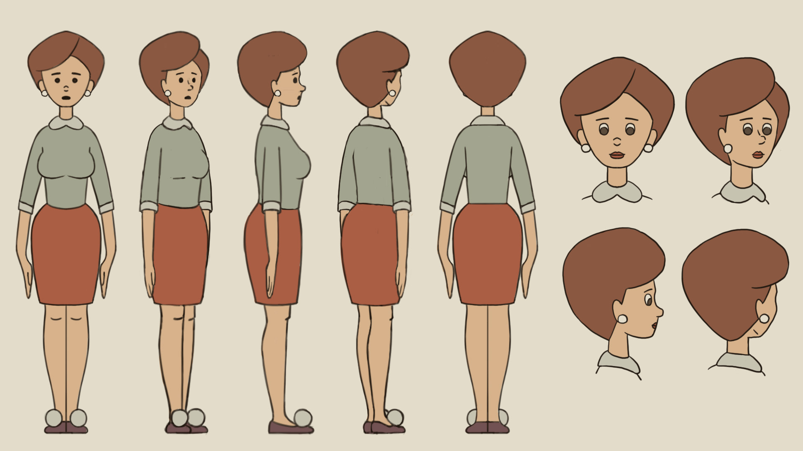
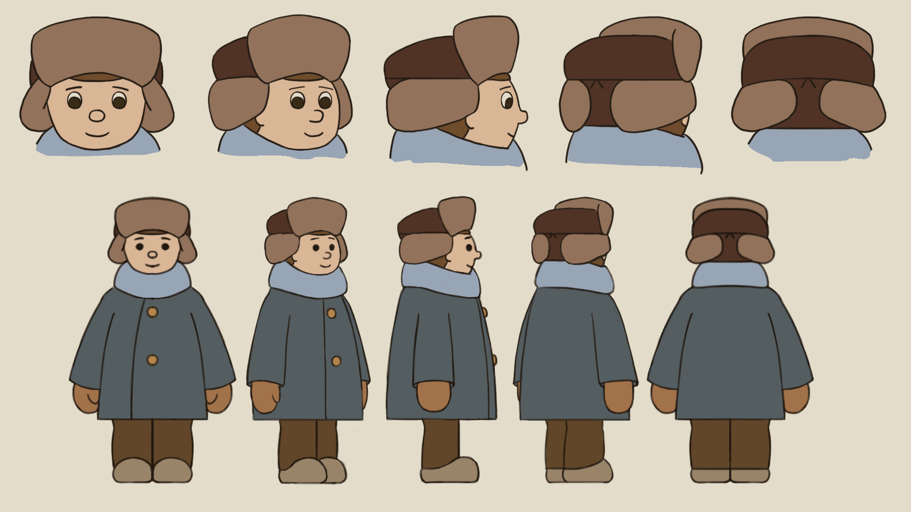
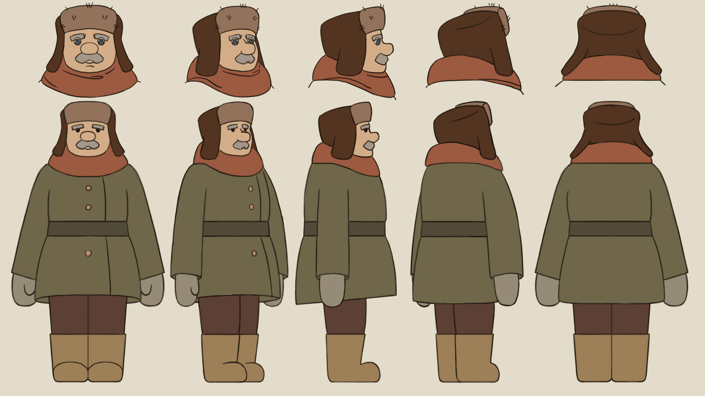

The Carpet
A flying carpet, a boy, and the quiet life of a winter courtyard.
| Title | «Ковёр» — дебютный анимационный фильм (2026) |
|---|---|
| Year | 2026 |
| Field | Animation film |
| Description | «Ковёр» — детский мультфильм, созданный на Свердловской киностудии, который рассказывает историю о непослушном ковре и одиноком дедушке, об их взаимоотношениях. |
 1.jpg 1.jpg |  2.jpg 2.jpg |
 3.jpg |  3_r1.jpg 3_r1.jpg |
 3_r2.jpg 3_r2.jpg |  4_1.jpg 4_1.jpg |
 4_2.jpg |  5.jpg 5.jpg |
 5_r1.jpg 5_r1.jpg |  5_r2.jpg |
 6.jpg |  7_1.jpg |
 7_2.jpg |  8_1.jpg 8_1.jpg |
 8_2.jpg |  9_1.jpg 9_1.jpg |
 9_2.jpg 9_2.jpg |